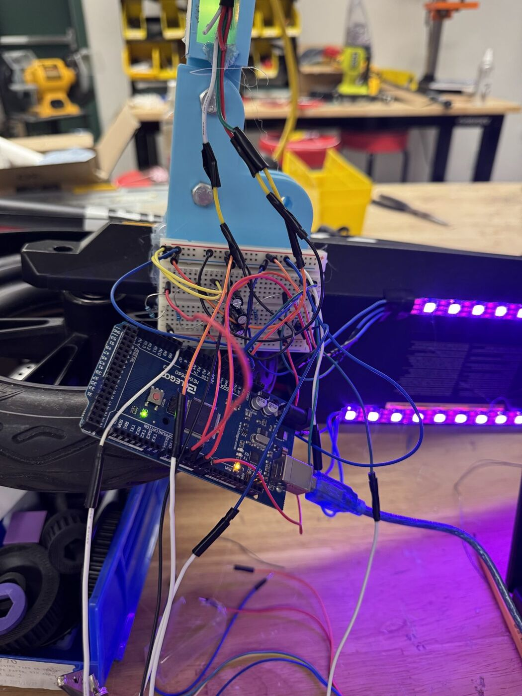

Project GreenGlide
Sensors and embedded feedback to make shared e-scooters safer.

Exploring how sensors and real-time embedded code can reduce collisions and instability for e-scooter riders and pedestrians in dense cities.
Goals
- Better situational awareness and collision avoidance through real-time sensing and feedback.
- Usage and environment data to understand accident patterns.
- One hardware and software architecture that is reliable in real time.
- Cheap enough for commercial and shared scooter fleets.